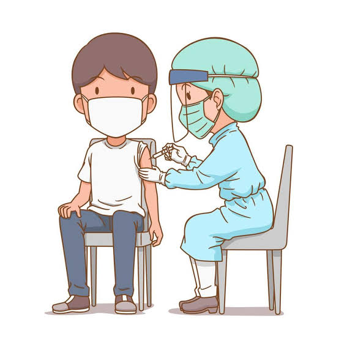
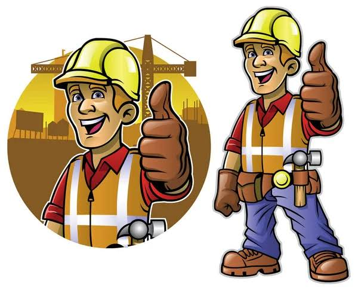

Servicio de Arquitecto_Enfermeria

Ofrezco servicio de aplicaciones de inyecciones de manera responsable,con higiene y cuidado.Para mas informacion, pueden escribirme por interno.
* Jeringa: Administra medicamentos. * Termómetro: Mide la temperatura. * Tensiómetro: Mide la presión arterial. * Tijera: Corta gasas y vendas. * Bandeja: Organiza instrumentos.
Los instrumentos de enfermería son importantes porque facilitan el cuidado del paciente, permiten realizar procedimientos correctamente y ayudan a controlar su estado de salud de forma segura y precisa.
Diseño y elaboración de planos para viviendas y edificios, adaptados a las necesidades y gustos del cliente.

Yo realizo diseños y planos de viviendas, pensando en las necesidades y gustos de cada cliente. También puedo ayudar a organizar los espacios de manera práctica y bonita.
* 📐 Escuadra: Sirve para trazar líneas y ángulos. * 📏 Regla T: Ayuda a dibujar líneas rectas. * 📏 Escalímetro: Permite medir diferentes escalas. * 🧭 Compás: Sirve para hacer círculos. * ✏️ Portaminas: Se utiliza para dibujar planos. * 📋 Tablero de dibujo: Apoya los planos al dibujar. * 📐 Transportador: Mide y marca ángulos..